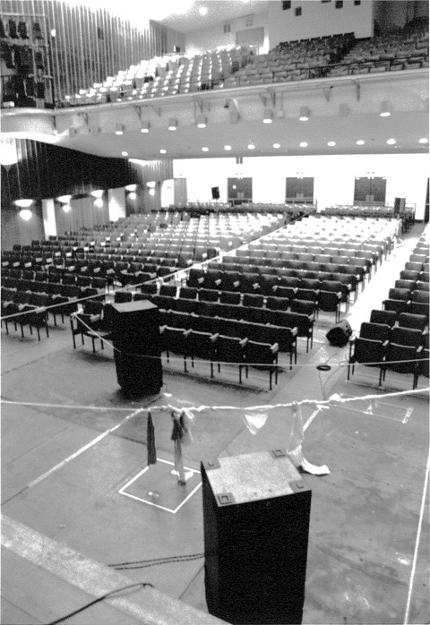
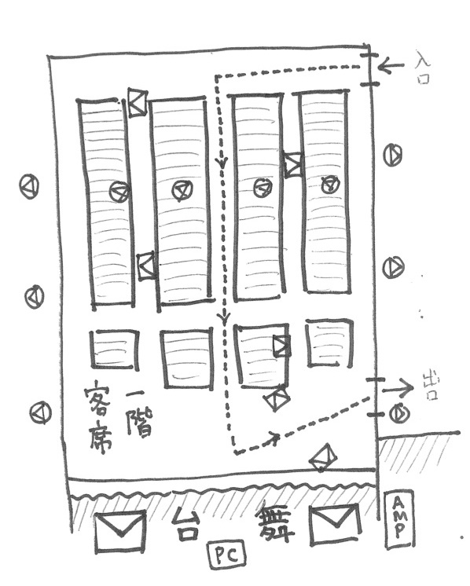

- 
- 
畦放ち、溝埋め Pull Down the Ridge, Fill In the Canal
2014 | Installation / Electroacoustic music, 8 Channels
────────────────
You have to grope your way through the rope into the dark auditorium where the roar is swirling.
Premiered: February 1-3, 2014 Tama Art University Auditorium
鑑賞者は、轟音の渦巻く暗い講堂の中へ、縄伝いに手探りで入らなければならない。
初演：2014年2月1日-3日 多摩美術大学 講堂